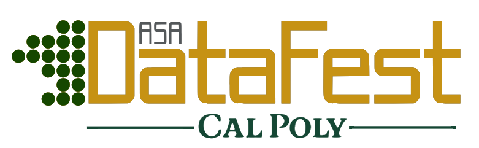

What is DataFest?
DataFest is a national event organized by the American Statistical Association as a celebration of data in which teams of undergraduates work around the clock to find and share meaning in a large, rich, and complex data set. The ASA provides a data set to participating institutions in which local DataFests are held across the country during March and April each year.
Intense Collaboration: Teams of 3-4 undergraduates engage in a 48-hour data analysis marathon, working to decipher a complex data set and craft insightful solutions.
Innovation and Camaraderie: Participants are fueled by a spirit of innovation and teamwork, pushing the boundaries of data exploration while fostering a supportive and collaborative environment.
Showcasing Discoveries: The event culminates in 5-minute presentations where teams share their findings and insights. Awards are given for the Best in Show, Best Visualization, and Best Use of Outside Data.
Learn more at https://ww2.amstat.org/education/datafest/.
Important Dates @ Cal Poly
| Item | Date |
|---|---|
| Informational Meeting & Panel | Thursday, February 12th UU hour (11:10-12pm) in 10-125 |
| DataFest Social Mixer (doughnuts!) | Thursday, February 26th UU hour (11:10-12pm) on 25-Back Patio |
| Workshop 1: Python Led by CSC 313 (co-hosted by Stat Club) | Thursday, March 5th UU hour (11:10-12pm) in 10-125 |
| Workshop 2: R/Getting Started with Data (co-hosted by Stat Club) | Thursday, March 12th UU hour (11:10-12pm) in 10-125 |
| Official Student Team Sign-up | Due Friday, March 20th at 11:59pm |
| DataFest 2026 Weekend! | Apr. 17 - 19, 2026 |
Contact
Dr. Emily Robinson, Assistant Professor of Statistics
erobin17@calpoly.edu
Department of Statistics, Cal Poly - SLO
statisticsdepartment@calpoly.edu